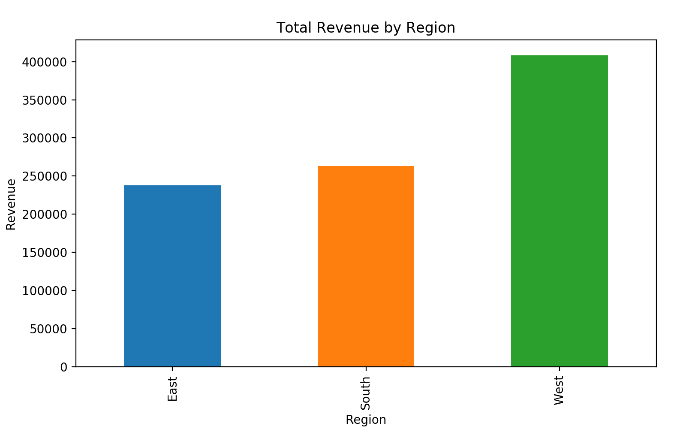
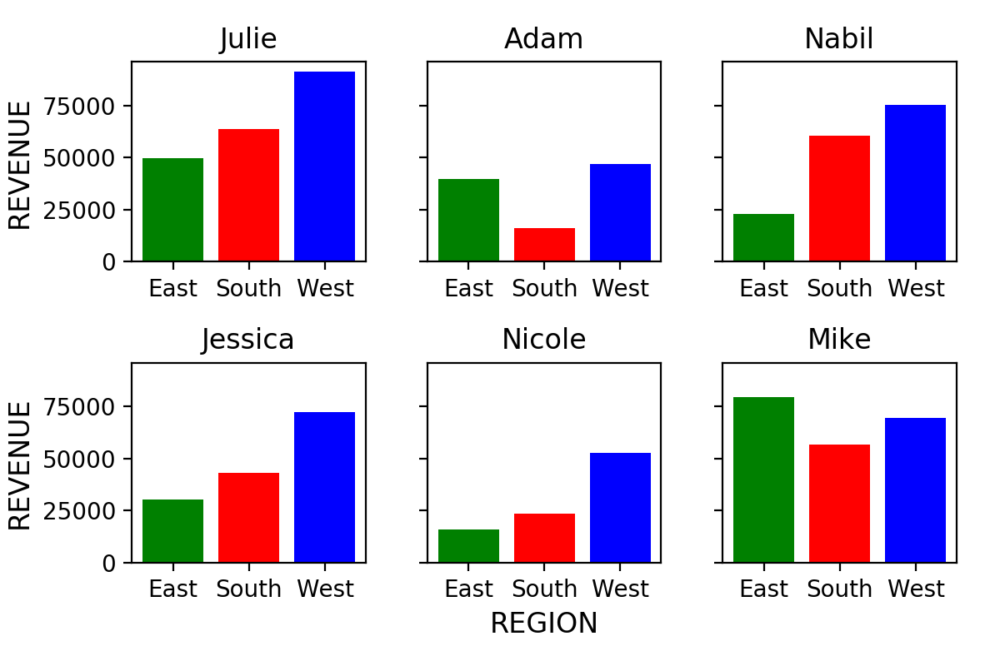
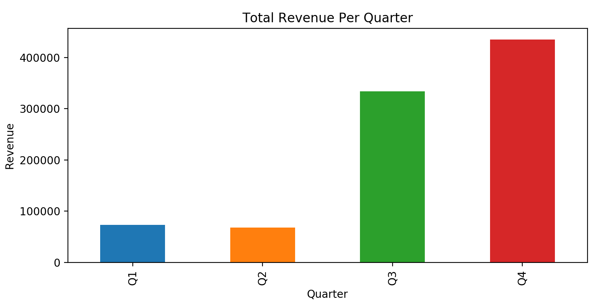
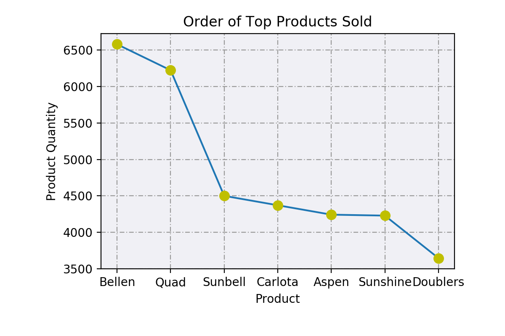

Sales Rep Data Analysis
OVERVIEW:
- This report will investigate a sales representative and revenue dataset.
- The focus on revenue generated, time periods of productivity, and most popular products sold.
- The key questions explored were:
- What is the total and % revenue per region?
- What is the total revenue per year?
- For each Sales Rep, what are their total revenues per region?
- Which Sales Reps have the largest % of revenue for each of the regions?
- Which quarter has the highest earnings?
- What is the revenue per month for each year?
- What are the top 3 products sold?




CONCLUSIONS:
Analysis of the Sales Rep Data analysis has resulted in the following general observations:
- The vast majority of sales occur in the months of September and October.
- The West region has nearly double the total revenue of the East and South regions combined.
- The top 3 products (Bellen, Quad, and Sunbell were sold more than the remaining 4 products combined.
- 2016 & 2017 were the most productive years out of three; the small quantity in 2015 may not be a reasonable comparison.